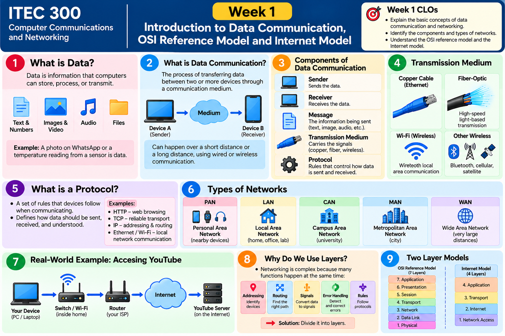

How does a simple “Hello!” travel across a network?
Discover the five communication components, network types, all seven OSI layers, and the five-layer Internet model. Learn by clicking, experimenting, and answering questions.
Start the learning journey →Week 1 · Visual Overview
Review the main ideas in the poster before exploring the interactive activities below.

Data becomes communication when it moves
Data can be text, numbers, photos, audio, video, or files. Data communication means transferring that information between devices through a communication medium.
The five components
Click each component to see its job in a WhatsApp-style message.
Send your own message
Both devices also need communication rules called protocols.
Why do we need protocols?
Two people need a common language. Similarly, devices need agreed rules to send, receive, and understand data. These rules are called protocols.
Web communication
Reliable transport
Addressing and routing
Local communication
From your laptop to a website
The lecture shows how end devices, access points, switches, routers, gateways, the Internet, and servers work together. Click the steps to follow one simplified example.
This is a teaching example, not a fixed route for every network. In a home network, one router may also include the Wi-Fi access point, switch, and gateway functions.
How large is the network?
Network types are grouped by the area they connect. Start with one person's devices and grow all the way to connections between cities or countries.
Which network connects several university buildings?
What happens to “Hello!” before it is sent?
Networking has many jobs: formatting, session management, delivery, addressing, framing, and signals. The OSI (Open Systems Interconnection) model divides them into seven layers. Select any layer to discover its role.
What changes as data goes down the layers?
In this simplified sender-side example, the message becomes transport data, then a packet with IP addresses, then a frame with local MAC addresses, then physical signals. At the receiver, processing goes back upward.
OSI has 7 layers. The Internet model has 5.
Both models explain communication. The Internet model groups OSI Application, Presentation, and Session functions into one Application layer; the lower four layers map directly in the lecture.
OSI · 7 layers
Internet · 5 layers
Combines OSI 7 + 6 + 5
Which layer would you check first?
Choose a problem. Think about its cause before revealing the likely layer.
10 interactive MCQs + 3 written questions
Select an answer to receive immediate feedback and a short explanation. The questions cover the full Week 1 lecture without repeating the same concept.
3 written practice questions
Write a short answer first, then reveal the model answer to compare your explanation.